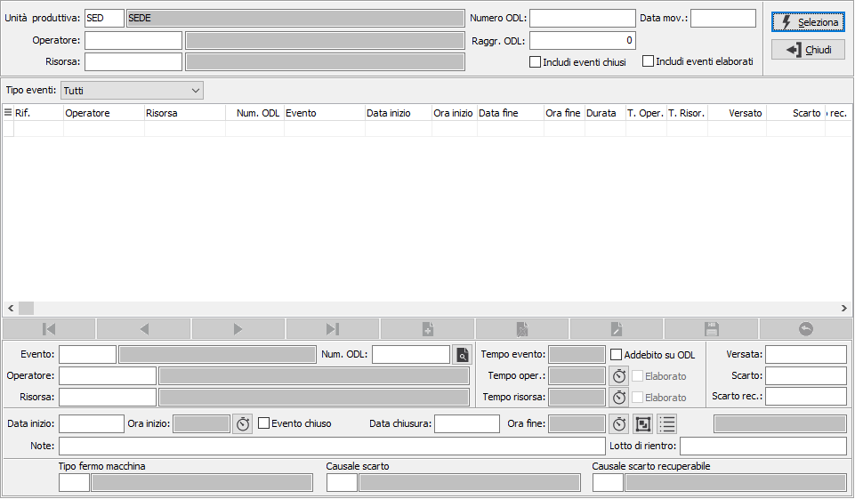
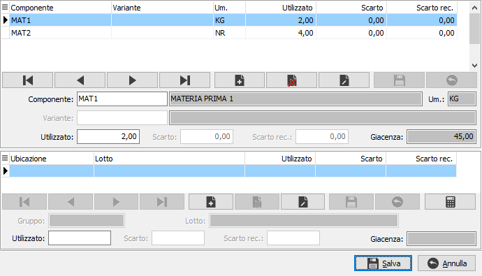
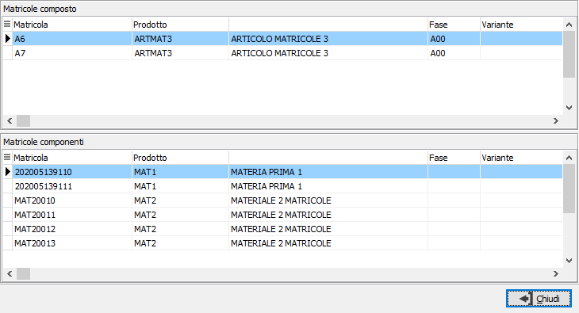

Manutenzione eventi Job
La funzione consente, al responsabile di produzione, di controllare
ed eventualmente modificare gli eventi registrati tramite l'applicazione
OS1BMJob. è consentito
di gestire oltre alla manutenzione di eventi creati da OS1BMJob anche
l’inserimento manuale di nuovi eventi.
E' necessario impostare l'unità produttiva, che se unica e configurata
sarà proposta in automatico, è poi possibile specificare un singolo operatore,
una singola risorsa oppure un singolo ODL e la data relativa agli eventi
da analizzare; è possibile visualizzare anche gli eventi chiusi e
quelli elaborati spuntando le relative caselle; se gestito è possibile
anche specificare il codice di un'eventuale raggruppamento di ODL sulla
stessa risorsa.
Premendo il pulsante seleziona viene avviata l'elaborazione e nella
parte inferiore vengono visualizzati gli eventi che è possibile filtrare
tramite il campo tipo eventi per visualizzarli per tipo (produzione, setup,
ecc.).
La procedura imposta dei controlli logici sia sulla variazione che sull'inserimento
di nuovi eventi; ad esempio se modifico un evento già elaborato e tolgo
la spunta all'elaborazione dei tempi mi verrà tolta in automatico anche
la sputa all'elaborazione dei tempi risorsa.

Se attiva la gestione dei componenti in configurazione
di OS1BMJob sarà presente questo pulsante per modificare i componenti
del versamento; il pulsante è presente e attivo su eventi chiusi relativi
a tipologie di eventi di produzione e rettifiche; se non viene premuto
il pulsante vengono comunque assegnati i componenti previsti dalla fase
dell'ODL. La finestra di gestione dei componenti prevede inserimento di
un nuovo componente, variazione di un componente esistente (non il componente
relativo alla fase precedente), cancellazione di un componente inserito.
Se attivo il controllo giacenza versamento in configurazione di OS1BMJob
questo sarà effettuato alla chiusura della finestra di modifica dei componenti.

 Se attiva la
gestione matricole in configurazione di OS1BMJob sarà presente questo
pulsante per visualizzare le matricole associate all'evento; il pulsante
è presente e attivo su eventi chiusi relativi a tipologie di eventi di
produzione e rettifiche; non è possibile effettuare modifiche alle matricole
assegnate all'evento. Se l'evento viene riaperto le matricole associate
saranno eliminate.
Se attiva la
gestione matricole in configurazione di OS1BMJob sarà presente questo
pulsante per visualizzare le matricole associate all'evento; il pulsante
è presente e attivo su eventi chiusi relativi a tipologie di eventi di
produzione e rettifiche; non è possibile effettuare modifiche alle matricole
assegnate all'evento. Se l'evento viene riaperto le matricole associate
saranno eliminate.
